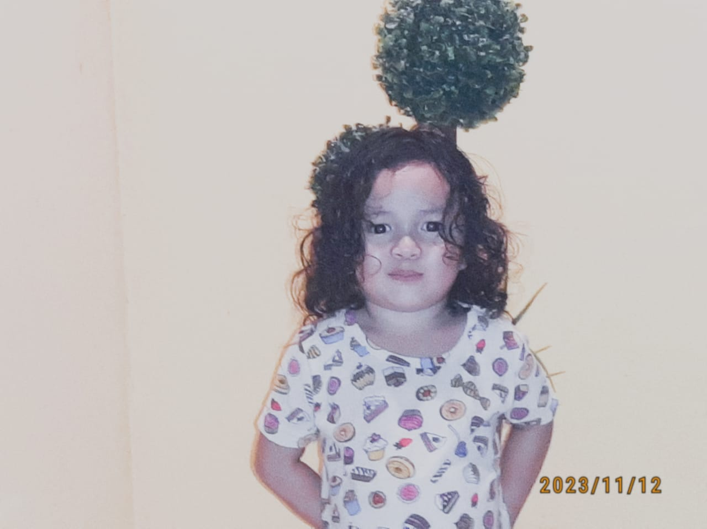
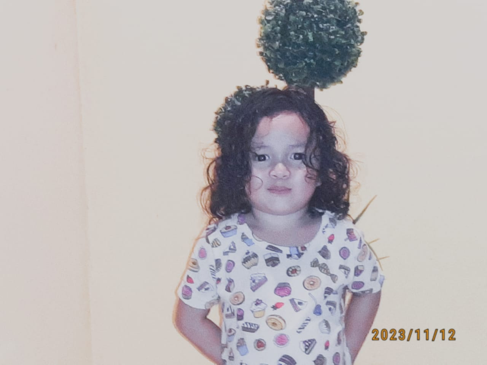

⇢ ˗ˏˋ Hello


My father, Mohd Zamri bin Tajip, was born on January 22, 1976, in Pasir Hor, Kelantan. He married my mother in September 2003. To me, he’s the best father in the world. He always gives his full attention to us, his children, and never neglects our needs.
My mother, Noor Asiah binti Sulaiman, was born on November 11, 1981, in Panji, Kelantan. She works as a nurse and is the most amazing mom ever. She constantly encourages me and my siblings to work hard and succeed in life. She especially pushes me to complete my Diploma on time. Her cooking is unbeatable—it’s so good that it’s one of the reasons I love to eat so much!
My parents are incredible, and I love them deeply. I want to make them proud and give them my best because the last thing I want is to ever let them down.
 

I have three siblings, and each of them has their own unique personality.
First, there’s my younger brother, Muhammad Haikal. He was born on December 2, 2005, at HRPZ II, and he’s 19 years old this year. Right now, he’s studying for his STPM at SMK Sultan Ismail.
Then there’s Muhammad Adam Daniel, my second younger brother. He was born on December 15, 2010, also at HRPZ II,. He’s currently studying at SIC. Adam loves food, whether it’s homemade or eaten out, and his favorite has to be Ayam Gunting. He’s also a huge hamster fan and a sporty guy who enjoys playing football, especially with Haikal.
Finally, there’s my youngest sibling, Nurul Hawa Humaira, who was born on July 30, 2020, at HRPZ II,. She’s only 4 years old and definitely the baby of the family. She’s a bit spoiled and has a habit of buying toys but then barely playing with them.
Each of them brings something special to the family, and I love them all dearly.

This Website is developed for IMD318 Individual Assignment
Design by: Nurul Izyan Farziana binti Mohd Zamri
Group: D1CDIM1105F
Prepared for: Miss Nur Ainatul Mardiah binti Mat Nawi